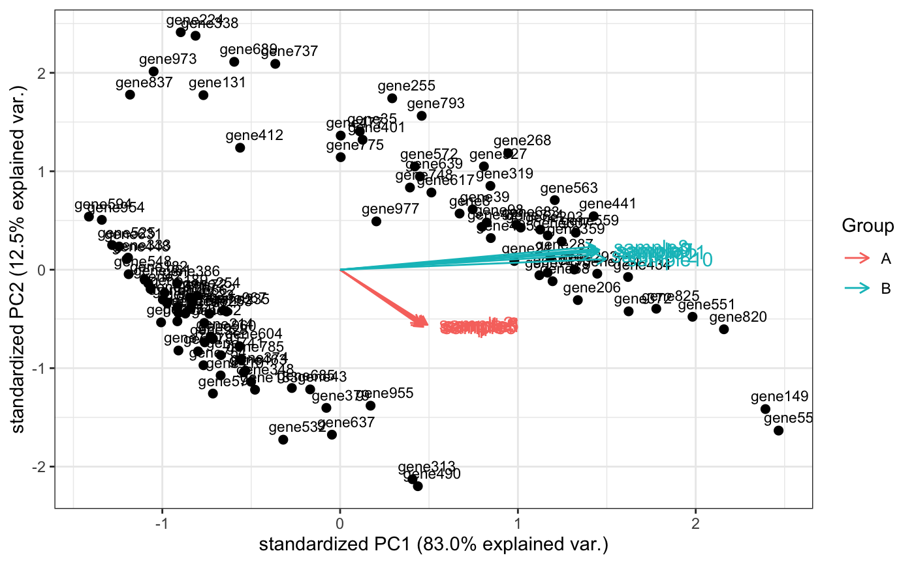
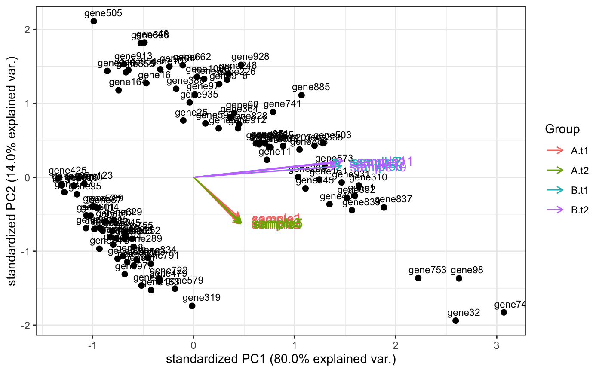

Computes and plots the principal components of the genes, eventually displaying the samples as in a typical biplot visualization.
genespca(x, ntop, choices = c(1, 2), arrowColors = "steelblue", groupNames = "group", biplot = TRUE, scale = 1, pc.biplot = TRUE, obs.scale = 1 - scale, var.scale = scale, groups = NULL, ellipse = FALSE, ellipse.prob = 0.68, labels = NULL, labels.size = 3, alpha = 1, var.axes = TRUE, circle = FALSE, circle.prob = 0.69, varname.size = 4, varname.adjust = 1.5, varname.abbrev = FALSE, returnData = FALSE, coordEqual = FALSE, scaleArrow = 1, useRownamesAsLabels = TRUE, point_size = 2, annotation = NULL)
| x | A |
|---|---|
| ntop | Number of top genes to use for principal components, selected by highest row variance |
| choices | Vector of two numeric values, to select on which principal components to plot |
| arrowColors | Vector of character, either as long as the number of the samples, or one single value |
| groupNames | Factor containing the groupings for the input data. Is efficiently chosen as the (interaction of more) factors in the colData for the object provided |
| biplot | Logical, whether to additionally draw the samples labels as in a biplot representation |
| scale | Covariance biplot (scale = 1), form biplot (scale = 0). When scale = 1, the inner product between the variables approximates the covariance and the distance between the points approximates the Mahalanobis distance. |
| pc.biplot | Logical, for compatibility with biplot.princomp() |
| obs.scale | Scale factor to apply to observations |
| var.scale | Scale factor to apply to variables |
| groups | Optional factor variable indicating the groups that the observations belong to. If provided the points will be colored according to groups |
| ellipse | Logical, draw a normal data ellipse for each group |
| ellipse.prob | Size of the ellipse in Normal probability |
| labels | optional Vector of labels for the observations |
| labels.size | Size of the text used for the labels |
| alpha | Alpha transparency value for the points (0 = transparent, 1 = opaque) |
| var.axes | Logical, draw arrows for the variables? |
| circle | Logical, draw a correlation circle? (only applies when prcomp was called with scale = TRUE and when var.scale = 1) |
| circle.prob | Size of the correlation circle in Normal probability |
| varname.size | Size of the text for variable names |
| varname.adjust | Adjustment factor the placement of the variable names, >= 1 means farther from the arrow |
| varname.abbrev | Logical, whether or not to abbreviate the variable names |
| returnData | Logical, if TRUE returns a data.frame for further use, containing the selected principal components for custom plotting |
| coordEqual | Logical, default FALSE, for allowing brushing. If TRUE, plot using equal scale cartesian coordinates |
| scaleArrow | Multiplicative factor, usually >=1, only for visualization purposes, to allow for distinguishing where the variables are plotted |
| useRownamesAsLabels | Logical, if TRUE uses the row names as labels for plotting |
| point_size | Size of the points to be plotted for the observations (genes) |
| annotation | A |
An object created by ggplot, which can be assigned and further customized.
The implementation of this function is based on the beautiful ggbiplot
package developed by Vince Vu, available at https://github.com/vqv/ggbiplot.
The adaptation and additional parameters are tailored to display typical genomics data
such as the transformed counts of RNA-seq experiments
library(DESeq2) dds <- makeExampleDESeqDataSet_multifac(betaSD_condition = 3,betaSD_tissue = 1) rlt <- rlogTransformation(dds) groups <- colData(dds)$condition groups <- factor(groups,levels=unique(groups)) cols <- scales::hue_pal()(2)[groups] genespca(rlt,ntop=100,arrowColors=cols,groupNames=groups)groups_multi <- interaction(as.data.frame(colData(rlt)[,c("condition","tissue")])) groups_multi <- factor(groups_multi,levels=unique(groups_multi)) cols_multi <- scales::hue_pal()(length(levels(groups_multi)))[factor(groups_multi)] genespca(rlt,ntop=100,arrowColors=cols_multi,groupNames=groups_multi)